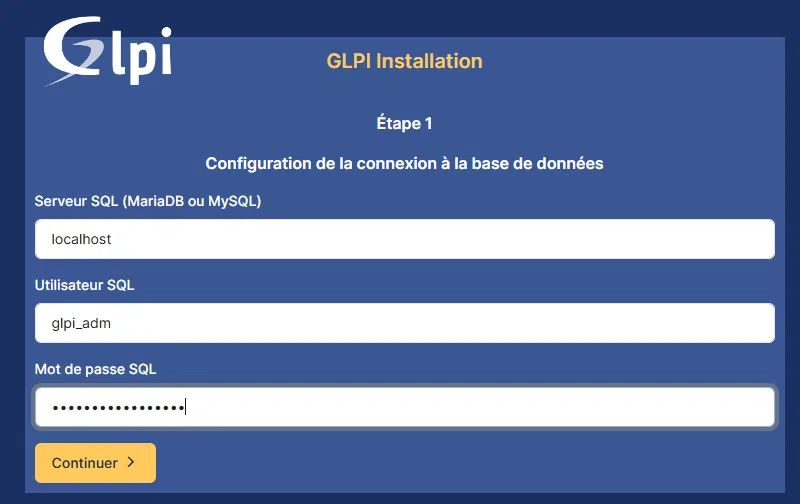
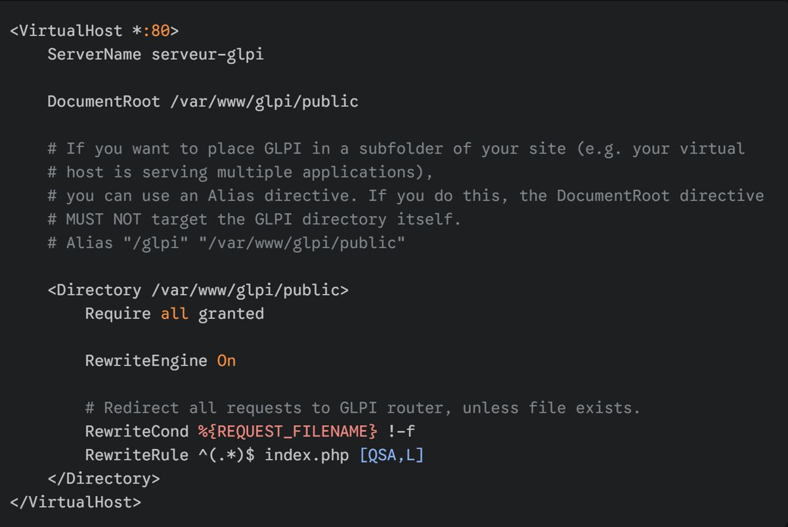

BTS · Épreuve E6
Gestion de parc et helpdesk avec GLPI
Déployer un outil de ticketing et d'inventaire relié à l'annuaire, avec déploiement silencieux de l'agent sur les postes.
- Debian 12
- GLPI 10
- Apache / PHP-FPM
- MariaDB
- Active Directory
- GPO
- pfSense
Contexte
Mise en place d'une solution ITSM pour centraliser les demandes utilisateurs et l'inventaire du parc, en binôme avec Aurélien Gaillard, sur une infrastructure virtualisée Proxmox.
Résultat
GLPI 10 opérationnel sur Debian 12, synchronisé avec l'annuaire Active Directory, agent déployé automatiquement par GPO sur les postes du domaine.
Étapes de réalisation
- Pile LAMP. Installation d'Apache, MariaDB et PHP avec les extensions requises par GLPI 10, dont php-ldap.
- Base de données. Sécurisation de MariaDB, création d'une base et d'un utilisateur dédiés.
- Installation et durcissement. Sources GLPI dans /var/www, puis séparation de la configuration, des fichiers et des journaux hors de la racine web, comme recommandé par l'éditeur.
- Apache et PHP-FPM. VirtualHost dédié, module rewrite, PHP-FPM, cookie de session httponly activé.
- Annuaire et agents. Synchronisation LDAP avec AD, GPO de déploiement silencieux de GLPI-Agent, GPO restrictives.
Détail de chaque étape
Cliquez sur une étape pour ouvrir sa page détaillée
01Préparation du serveur (LAMP)Mettre à jour Debian 12 et installer Apache, MariaDB et PHP avec les extensions de GLPI 10.Lire cette étape →02Base de données MariaDBSécuriser MariaDB puis créer une base et un utilisateur dédiés à GLPI.Lire cette étape →03Installation et durcissement des fichiersTélécharger GLPI 10.0.10 et déplacer configuration, fichiers et journaux hors de la racine web.Lire cette étape →04Serveur web ApacheCréer un VirtualHost dédié, activer la réécriture d'URL et désactiver le site par défaut.Lire cette étape →05PHP-FPM avec ApacheFaire tourner PHP comme un service indépendant et protéger les cookies de session.Lire cette étape →06Finalisation et dépannageTerminer l'installation depuis le navigateur et corriger la résolution du nom d'hôte.Lire cette étape →07Comptes et profilsCréer un technicien et un utilisateur standard pour tester le cycle de vie d'un ticket.Lire cette étape →08Inventaire du parcPeupler la base avec un poste, un serveur et un périphérique.Lire cette étape →09Cycle de vie d'un ticketSuivre un incident de la déclaration à la clôture, du point de vue de l'utilisateur et du technicien.Lire cette étape →10Sécurisation HTTPSChiffrer l'accès à GLPI et rediriger automatiquement le HTTP vers le HTTPS.Lire cette étape →11Protection SSH avec Fail2banBloquer automatiquement les adresses qui multiplient les échecs de connexion.Lire cette étape →
Captures


Difficultés rencontrées
- Le nom d'hôte ne se résolvait pas en local, alors que l'IP fonctionnait : correction par une entrée dans /etc/hosts.
Technologies utilisées
- Linux Debian
- Apache / PHP
- MariaDB
- LDAP / AD
- GPO
- ITSM